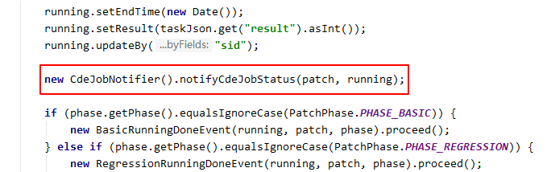
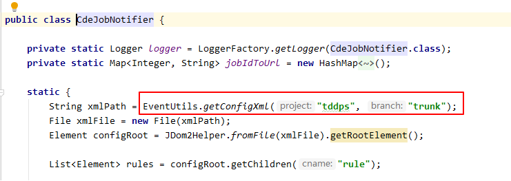
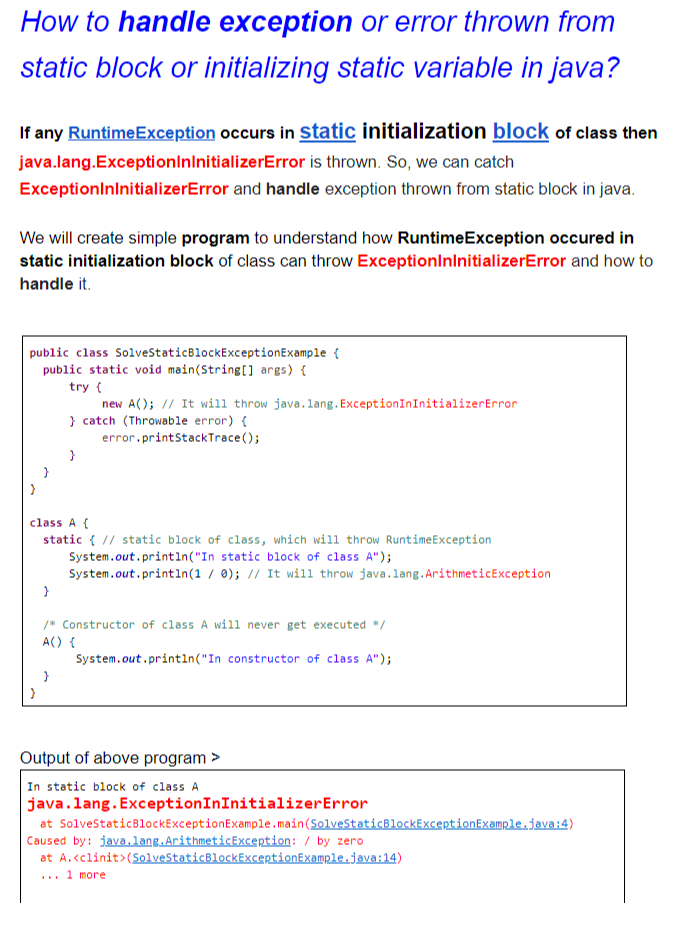

今天本来是 TB 的，大部分同时都去爬山了。最近腿总是有点不舒服，所以就和同事 Mihi 一起回了公司
到了公司发现有同事在催我 Coverity 的事情了，我就立刻动手准备在 SVN 上把 trunk.xml 改掉。在改掉前还没有忘记先 svn update 一把，顺便瞄了一眼，老付把旧的项目的 xml 文件删除掉了。心想删掉也好，其实早该删除掉了。更新完成后就把我的改动更新上去，提交了，一切正常
去茶水间倒了杯水，刚坐下。Mihi 通过 Jabber 找我，描述的问题是这样的： 发布了一个最新的 taskgenerator， 发现有问题，就 revert binary， revert 问题后发现问题还是有，很奇怪
我赶紧放下手中的活，去看了看， task generateor 出问题的话，整个 CDE 就挂了。看了一下错误是这样的：
15:11:20 INFO - Running done from 10.109.2.107, sid is: 4728798, msg id:C0A8001F109E08EFB8463BE83EAB0003
15:11:21 INFO - Running done from 10.109.2.107, sid is: 4728798, msg id:C0A8001F109E08EFB8463BE83EAB0003
15:11:21 RunningDoneMsgListner.java:90 ERROR - Abnormal running status, sid: 4728798, status: 1
从现象上看是，同一个错误打印了两遍：“Running done from “，并且两遍的 message Id 是一样的，我说这个错误我碰到过，应该是 consuemMessage 函数里出现了异常，导致消息没有处理成功，所以出现了第二次处理
赶紧去看了下代码，发现几乎整个 consumeMessage 的代码都被 try catch 包裹住的，但是 catch 出的 log 打印确是没有打印，顿时感觉到没有思路。consumeMessage 长这样：
@Override
public ConsumeOrderlyStatus consumeMessage(List<MessageExt> msgs, ConsumeOrderlyContext context) {
MessageExt msg = msgs.get(0);
String tags = msg.getTags();
try {
//....
return ConsumeOrderlyStatus.SUCCESS;
} catch (Exception exception) {
logger.error("Exception occured:", exception);
throw exception;
}
}
我没思路的原因是认定， try{} 块里的所有的异常都能够被捕获，既然消息处理失败（也就是没有返回 ConsumeOrderlyStatus.SUCCESS）, 一定是 try{} 块中的内容抛出了异常，但是有没有捕获到任何异常。好像走进了死胡同。
无奈只能和 Mihi 一起打 log， 打了一圈，最后发现在这一句（notifyCdeJobStatus )没有进去：

这时候，Mihi 说最近老付把旧的 XML 删除掉了。我一想还真可能是这个问题。指不定就是配置的问题。所以我们果断 revert 了 svn 上关于 xml 的改动。然后发现，之前的错误打印没有了，系统正常了。
哎
Mihi 给我看了如下的 CdeJobNotifier 的代码，心想还真是有关系。 我还没有从问题里走出来，继续查：
进这个 CdeJobNotifer 里看看是这样的：

还记得前面我说过，一些过时的 xml 被删除掉了，但是这里的代码还在找老的 xml， 因此 xmlPath 实际上为一个无效的路径，而 JDom2Helper.fromFile 会返回 null 对， 接下来就会出现 NullPointerException 。
哪问题来了，为啥我们在 consumeMessage 下的 try catch 没有捕获到这个异常呢。google 了一下, 原因如下截图所示：

因为 static block 中的异常，会转化为 ExceptionInitializerError， 而这个 ExceptionInitializerError 不是从 exception 继承的，而最终是从 throwable 继承的。consumeMessage 中的 try catch，只是捕获了 exception 而没有捕获 throwable。因此是捕获不到
这还不是事情的全部，当我打开 JDom2Helper.getConfigXml 中的代码是这样的：
public static Document fromFile(final File file) {
try {
return fromInputStream(new FileInputStream(file));
} catch (FileNotFoundException e) {
e.printStackTrace();
}
return null;
明明就是在返回空前打印出了异常，而在我们查问题的时候，只记得看 log 了。没有看 std::err，我去哭一会
nohup.out 里的 log 长这样：
java.io.FileNotFoundException: config/sc/tddps/trunk.xml (No such file or directory)
at java.io.FileInputStream.open0(Native Method)
at java.io.FileInputStream.open(FileInputStream.java:195)
at java.io.FileInputStream.<init>(FileInputStream.java:138)
at nokia.continuous2.core.helper.JDom2Helper.fromFile(JDom2Helper.java:91)
at nokia.continuous2.task.sct.gerritevents.CdeJobNotifier.<clinit>(CdeJobNotifier.java:42)
at nokia.continuous2.task.sct.rocketmq.RunningDoneMsgListner.persist(RunningDoneMsgListner.java:130)
at nokia.continuous2.task.sct.rocketmq.RunningDoneMsgListner.consumeMessage(RunningDoneMsgListner.java:69)
at org.apache.rocketmq.client.impl.consumer.ConsumeMessageOrderlyService$ConsumeRequest.run(ConsumeMessageOrderlyService.java:471)
at java.util.concurrent.Executors$RunnableAdapter.call(Executors.java:511)
at java.util.concurrent.FutureTask.run(FutureTask.java:266)
at java.util.concurrent.ThreadPoolExecutor.runWorker(ThreadPoolExecutor.java:1149)
at java.util.concurrent.ThreadPoolExecutor$Worker.run(ThreadPoolExecutor.java:624)
at java.lang.Thread.run(Thread.java:748)
还有些事情可以解释的通了，
为啥删除 XML 后，问题没有立即被发现？因为在服务没有重启的情况下，CdeJobNotifier 已经加载了，静态区代码不会再执行
为啥会一直有错误打印，static 代码不是只执行一遍吗？因为累没有加载成功，后面语言该类的时候还会继续加载